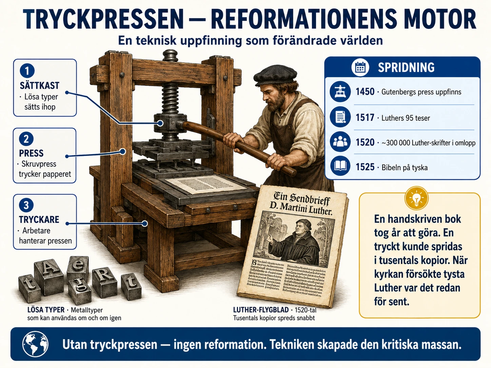

En uppfinning som förändrade allt
I §1C läste du att tryckpressen var avgörande för reformationen. Utan den hade Luther blivit en till glömd kritiker som Wycliffe eller Hus. Men tryckpressen gjorde mycket mer än att sprida Luthers idéer. Den förändrade hur människor lärde sig saker, hur de fick nyheter, hur de tänkte om världen.
Det är därför många historiker räknar Gutenbergs tryckpress som en av människans viktigaste uppfinningar genom alla tider — i samma klass som hjulet, plogen och elektriciteten.
I den här djupdykningen tittar vi närmare på vad som var så revolutionerande med uppfinningen, och vad den ledde till på lång sikt.
Johannes Gutenberg och hans verkstad
Johannes Gutenberg föddes omkring år 1400 i staden Mainz i Tyskland. Han kom från en köpmansfamilj och utbildades till guldsmed. Det var en lyckosam bakgrund — som guldsmed lärde han sig att arbeta med små metallföremål och med olika metallblandningar. Båda kunskaperna skulle bli viktiga för hans uppfinning.
Gutenberg ägnade en stor del av sitt vuxna liv åt att utveckla en ny metod för att trycka böcker. Han arbetade i hemlighet. Han lånade stora summor pengar från en köpman vid namn Johann Fust. Det dröjde nästan tjugo år innan han var klar.
Resultatet kom omkring 1455. Det var en bok — den så kallade 42-radiga Bibeln, namngiven efter att den hade 42 rader på varje sida. Den var den första boken som någonsin tryckts med Gutenbergs metod. Han tryckte ungefär 180 exemplar. 49 av dessa exemplar finns fortfarande kvar idag och betraktas som ovärderliga skatter.
Vad var nytt med uppfinningen?
Tryckning fanns redan före Gutenberg. I Kina hade människor tryckt med träblock i hundratals år. Träblock fungerade så här: en hel sida skars ut i ett block av trä, blocket täcktes med bläck och pressades mot papper. Men metoden hade problem. Varje sida krävde ett eget block. Att skära ut en bok tog år. Och blocken slets ut snabbt.
Gutenbergs uppfinning var lösa bokstäver av metall. Varje bokstav var en separat liten metallstav med en upphöjd bokstav i ena änden. Det betydde att man kunde:
- Sätta ihop en sida med lösa bokstäver
- Trycka många exemplar av den sidan
- Plocka isär bokstäverna och använda dem igen för en ny sida
Detta var revolutionerande. Plötsligt kunde tryckning bli snabb och flexibel. Att trycka en hel bok tog veckor istället för år. Och kostnaden per bok blev mycket lägre.
För att förstå skillnaden: en handskriven bok kunde ta en munk flera år att kopiera. Ett färdigt exemplar kostade lika mycket som ett hus. Med tryckpressen kunde 1000 exemplar av samma bok tryckas på några månader, till en kostnad som hantverkare och köpmän kunde ha råd med.
Spridningen av uppfinningen
Tryckpressen spred sig snabbt över Europa. Inom 50 år efter Gutenbergs Bibel hade Europa över 1000 tryckerier. Stora städer som Mainz, Köln, Augsburg, Nürnberg, Venedig, Paris och London hade alla flera tryckerier.
Mellan 1450 och 1500 trycktes uppskattningsvis 20 miljoner böcker i Europa. För att sätta detta i perspektiv: under hela medeltiden — alltså 1000 år — hade kanske 10-15 miljoner handskrivna böcker producerats totalt. Tryckpressen åstadkom mer på 50 år än hela handskriftstraditionen på 1000 år.
Bibeln var bara början
Mycket av det som trycktes var religiösa texter — Biblar, böneböcker, predikningssamlingar. Men tryckpressen spred snart också mycket annat:
Kartor. När européerna upptäckte Amerika och seglade runt jorden behövde kartograferna sprida sin kunskap. Tryckta kartor blev en stor industri.
Vetenskapliga böcker. År 1543 publicerades två böcker som förändrade vår syn på världen. Nikolaus Kopernikus Om himlakropparnas kretslopp hävdade att jorden snurrar runt solen (inte tvärtom). Samma år publicerade Andreas Vesalius en stor anatomisk bok om människokroppen med detaljerade illustrationer. Båda böckerna kunde tryckas i många exemplar och spred sig snabbt till universitet och vetenskapsmän över hela Europa.
Läroböcker. Skolor och universitet behövde textböcker. Plötsligt kunde alla elever ha samma bok — något som hade varit omöjligt tidigare.
Almanackor och kalendrar. Vanliga människor behövde veta när helgdagar inföll, när månen var full, när det var bra att så. Almanackor blev bestsellers.
Pamfletter och flygblad. Korta texter om aktuella ämnen — religion, politik, sensationella nyheter. Under reformationen trycktes 6,6 miljoner exemplar av Luthers pamfletter mellan 1518 och 1525. För en befolkning på 16 miljoner tyskar är det en otrolig spridning.
De första tidningarna. På 1600-talet uppstod regelbundet utkommande nyhetsblad — föregångare till dagens tidningar. Den första kända regelbundna tidningen var Relation från Strassburg som började komma ut 1605.
Läskunnigheten växer
Tryckpressen förändrade också vilka som kunde läsa. Före tryckpressen var läskunnighet sällsynt. Kanske 5-10 procent av Europas vuxna kunde läsa enkla texter. De flesta var präster, munkar och rika köpmän.
Med tryckpressen blev böcker billigare. Föräldrar tyckte det var värt att lära sina barn läsa. Skolor växte fram. Reformationens betoning på att alla skulle kunna läsa Bibeln själv pressade också upp läskunnigheten i protestantiska områden.
Under 1500- och 1600-talet ökade läskunnigheten dramatiskt. I lutherska Tyskland och Skandinavien nådde den 30-50 procent under 1700-talet — höga siffror för sin tid. Sverige blev känt för sin höga läskunnighet, vilket går tillbaka till husförhören som infördes på 1600-talet (där prästen kontrollerade att alla i hushållet kunde läsa katekesen).
Men läskunnighet handlade inte bara om att läsa Bibeln. När människor kunde läsa började de också läsa annat — almanackor, romaner, politiska traktat, vetenskapliga texter. En läsande befolkning är en befolkning som kan tänka för sig själv. Det var en av tryckpressens viktigaste effekter.
Vetenskaplig revolution
Tryckpressen möjliggjorde också den vetenskapliga revolutionen under 1500- och 1600-talen. Före tryckpressen var det svårt för forskare att veta vad andra forskare gjorde. Handskrivna böcker spreds långsamt och dyrt. En vetenskapsman i Italien kunde ta år innan han hörde om en upptäckt i Polen.
Med tryckta böcker och senare med vetenskapliga tidskrifter kunde idéer spridas snabbt. Galileo Galilei kunde läsa Kopernikus. Isaac Newton kunde läsa Galileo. Forskning började byggas på tidigare forskning på sätt som inte hade varit möjligt tidigare.
När Newton publicerade sin berömda Principia Mathematica år 1687 — boken som lade grunden för modern fysik — kunde den genast tryckas i många exemplar och spridas över Europa. Inom årtionden hade hans idéer påverkat hela den vetenskapliga världen.
Tryckpressen och vår egen tid
Det är värt att stanna vid en jämförelse med vår egen tid.
På 1990-talet uppstod internet som en ny teknologi för att sprida information. Plötsligt kunde idéer, bilder, videor och texter spridas över hela världen på sekunder. Många historiker har jämfört internets påverkan med tryckpressens.
Likheterna är slående. Båda teknologierna:
- Gjorde information mycket billigare att sprida
- Demokratiserade kunskapen — fler människor fick tillgång
- Skapade nya möjligheter för individer att nå stor publik
- Sänkte makten hos de gamla "vakthundarna" av information (på 1500-talet kyrkan, idag traditionella medier)
- Skapade också nya problem — falska nyheter, propaganda, splittring
Båda teknologierna förändrade hur människor tänker om världen. Tryckpressen tog ungefär hundra år att fullt påverka samhället. Vi vet ännu inte vilka långsiktiga effekter internet kommer ha.
Vad ska du ta med dig?
Tryckpressen är en av historiens viktigaste uppfinningar. Den möjliggjorde reformationen, den vetenskapliga revolutionen, den ökade läskunnigheten och i förlängningen upplysningen, demokratin och industriella revolutionen.
Och bakom allt detta står en man i Mainz som tillbringade tjugo år av sitt liv med att utveckla en metod för att gjuta små metallbokstäver. Gutenberg dog förmodligen utan att förstå vidden av vad han skapat.
Det är en lärdom om historia. Stora förändringar börjar ofta små. En förändring i teknologi som verkar liten i sin tid kan visa sig vara en av de mest betydelsefulla händelserna i mänsklighetens historia.
Det är värt att tänka på det när vi använder våra mobiltelefoner och söker information på nätet. Vi lever just nu i en period som kanske är lika revolutionerande som Gutenbergs tid. Och precis som människor på 1500-talet kan vi inte fullt se vad det innebär förrän vi tittar tillbaka.